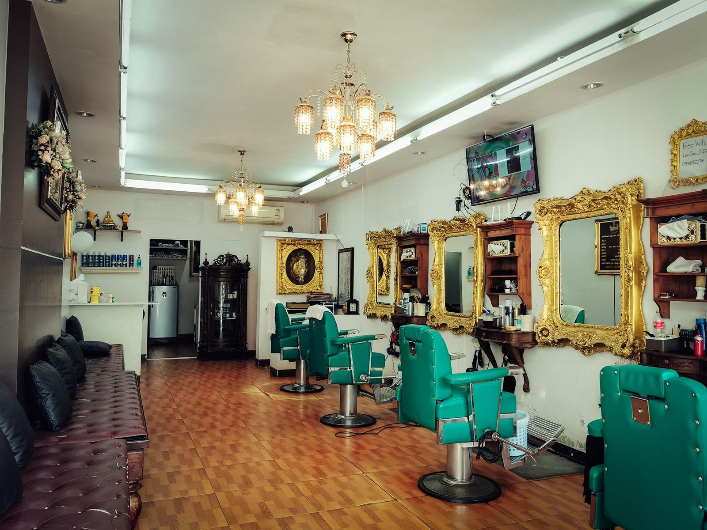
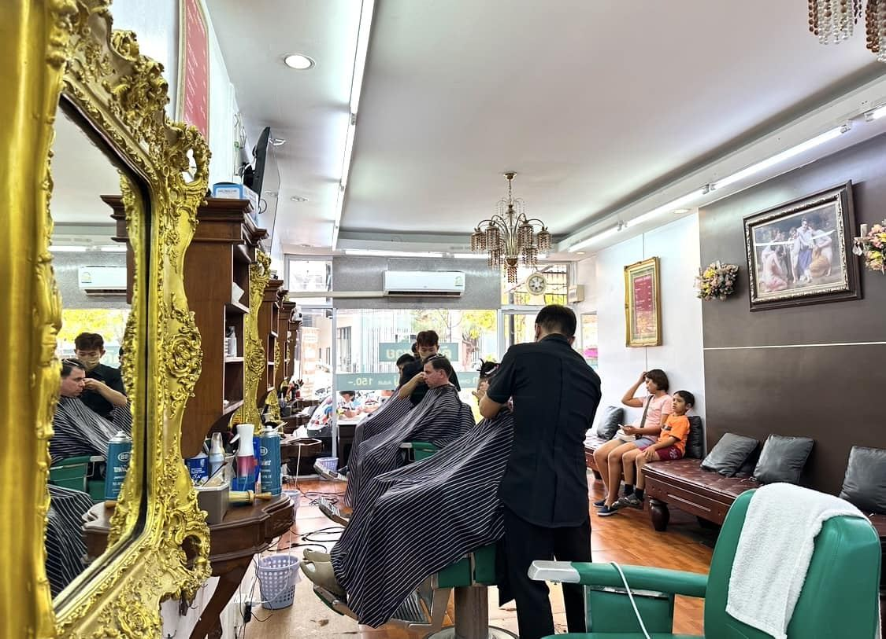
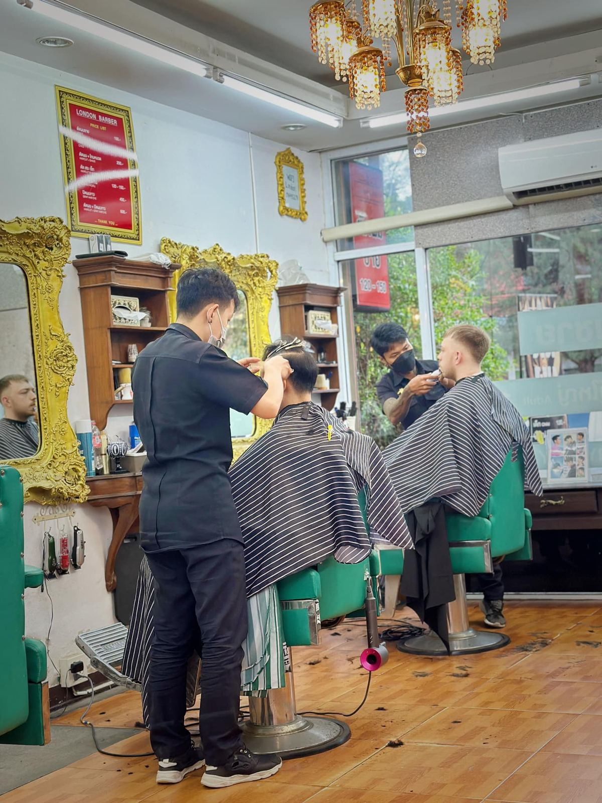
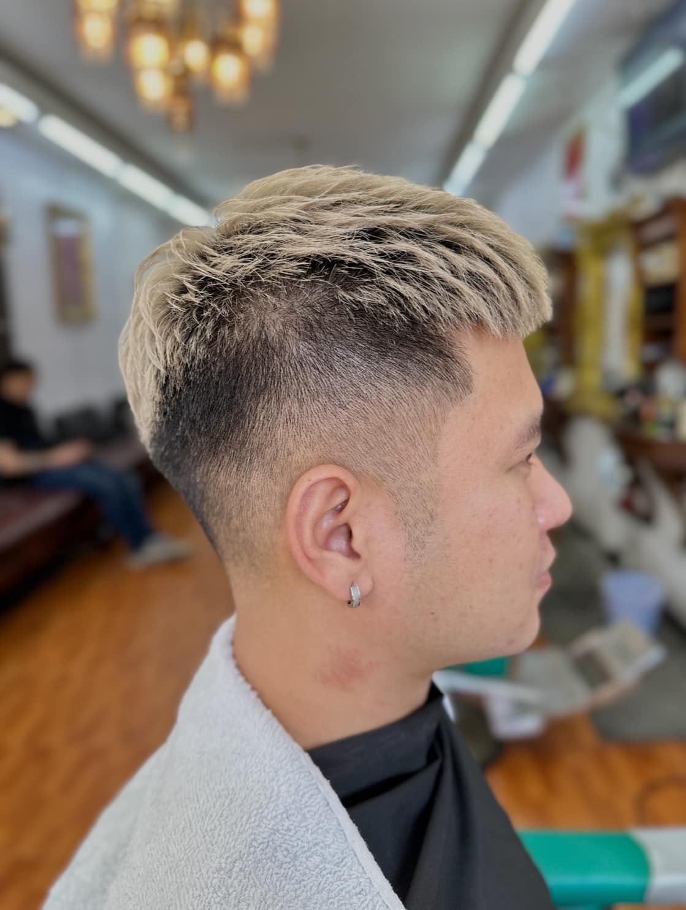
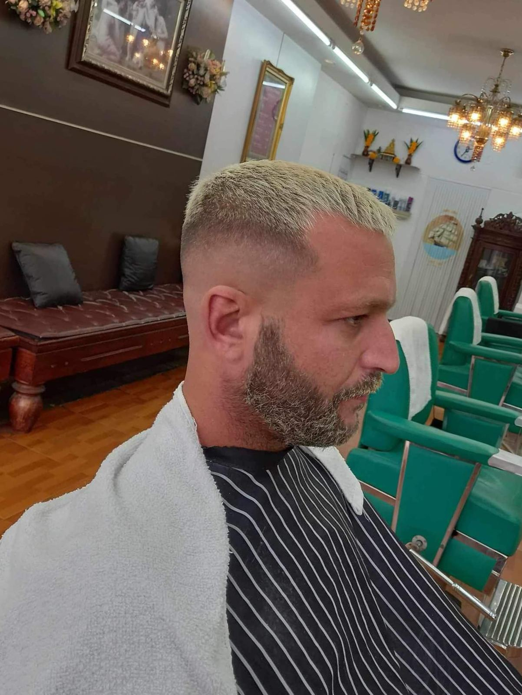
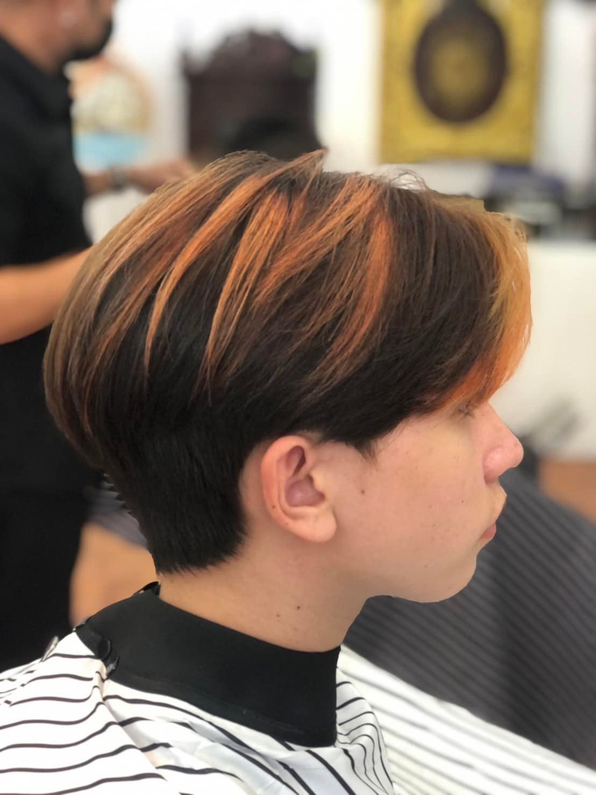
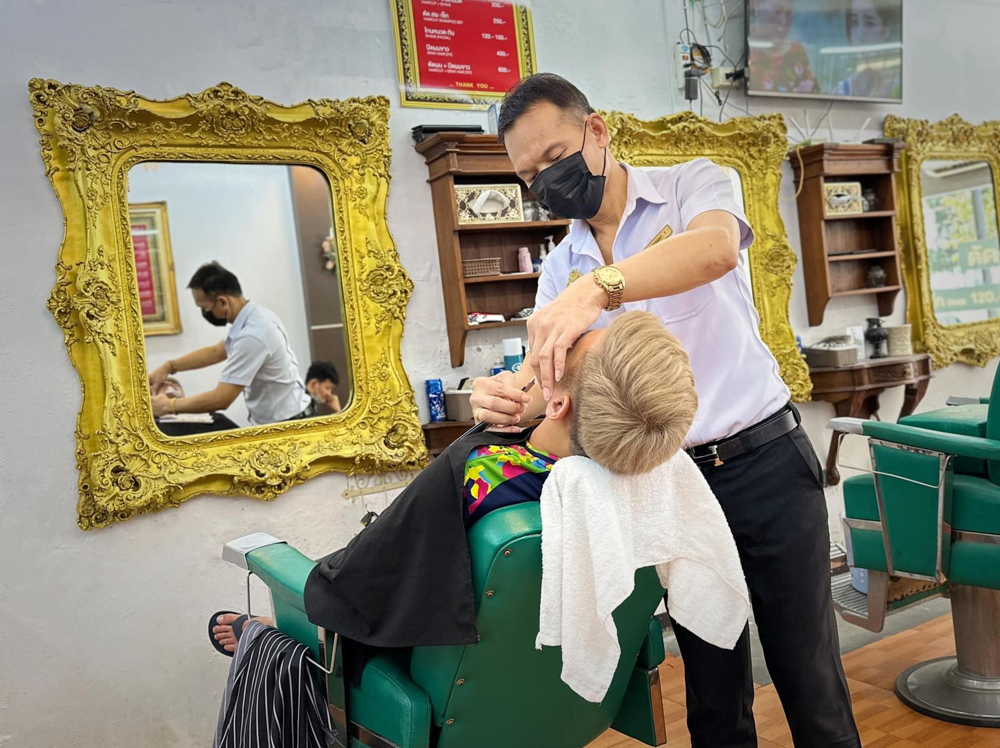
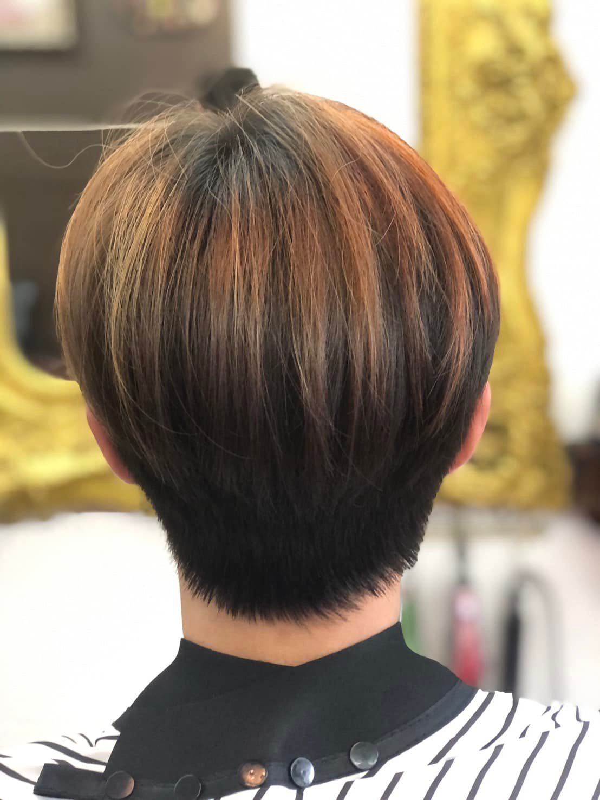
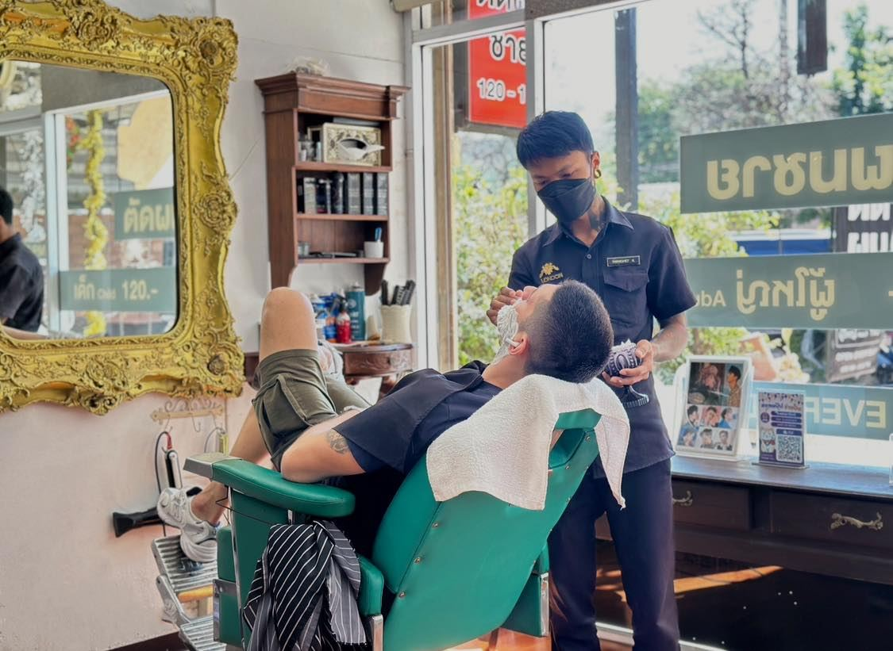
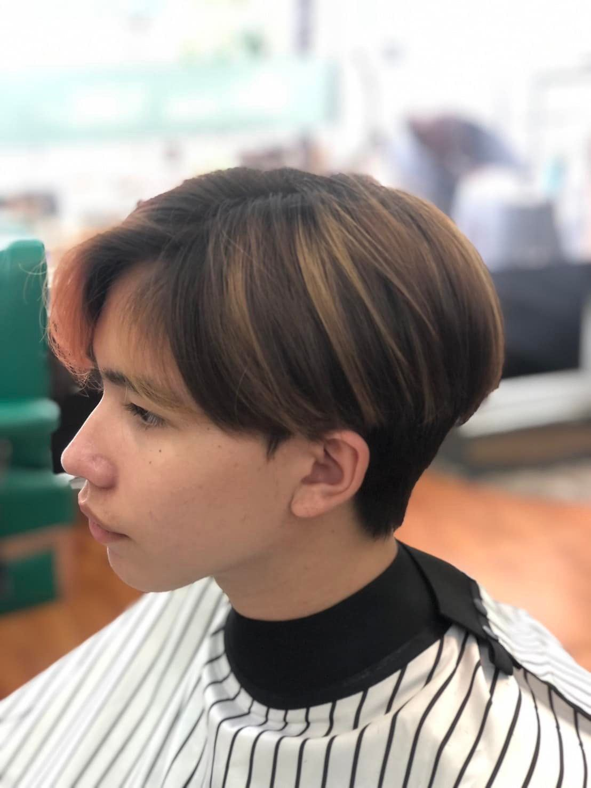

01
Haircut & Style
ตัดผมชาย · ออกแบบทรงผม
From a neat short-back-and-sides to a modern textured crop. Show us a photo or let your barber suggest a shape that suits your face and hair.

Gentlemen's Barber · Udon Thani
ลอนดอนบาร์เบอร์ · ร้านตัดผมชาย สไตล์ผู้ดีอังกฤษ ใกล้เซ็นทรัลฯ อุดรธานี
A proper barbershop on Prajak Silpakhom Road, a short walk from Central Plaza. Sharp haircuts, clean fades and beard tidy-ups in a room full of gilded mirrors and leather chairs.
About us · เกี่ยวกับเรา
London Barber Original is a men's barbershop with an English heart: gold-framed mirrors, chandeliers, green leather chairs and barbers who take their time to get your cut right.
This is our Branch 1 on Prajak Silpakhom Road, close to Central Plaza Udon Thani. Bring a reference photo, tell us how you wear your hair, and we'll design a style that suits you.
💈 บริการออกแบบทรงผมสำหรับสุภาพบุรุษ 💈


Services · บริการ
ตัดผมชาย · ออกแบบทรงผม
From a neat short-back-and-sides to a modern textured crop. Show us a photo or let your barber suggest a shape that suits your face and hair.
เฟด · อันเดอร์คัท
Low, mid, high or skin fades blended clean with clippers, and finished with scissors on top.
โกนหนวด · สระผม
Beard trims and tidy-ups, and a refreshing hair wash to finish your visit.
Prices on request: call us or ask at the shop.
Recent work · ผลงาน
A few cuts from our barbers. Ask for any style, from classic to trending.



From our customers
“I showed him the picture of the high fade with some trimming on top. He was on point!”Google review
“This shop is clean, barber is friendly. The shop is air conditioned. There is parking out the front.”Google review
“Walked in, got seen right away… done the job well.”Google review
Gallery · บรรยากาศร้าน




More on our Facebook page.
Visit · การเดินทาง